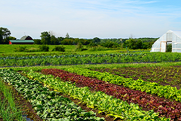

Colbert Farm
This is one of the first organic farms in the area. They grow a variety of vegetables all season long.
Colbert Farm
This is one of the first organic farms in the area. They grow a variety of vegetables all season long.
Deer Run Farm
This farm specializes in mid to late season vegetables. When in season their tomatoes are the tastiest tomatoes we have ever eaten.
Back Road Farm
This farm is an old farm with many years of growing experience. Year after year they produce the best sweet corn and string beans.
Moon Shadow Farm
This farm specializes in Southern heirloom variety beans and peas. They are available from late July to early October.
Sleepy Ridge Farm
This farm supplies produce from leafy vegetables at the begining of the season to Tomatoes in the late part of the season.
Mountain View Farm
This farm supplies all the fruits from strawberries to peaches to blueberries for our cannned goods.